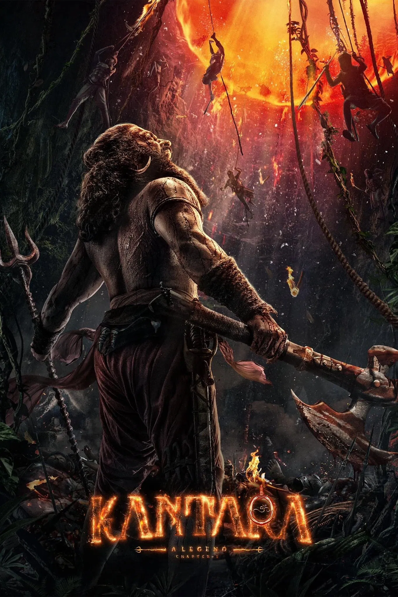
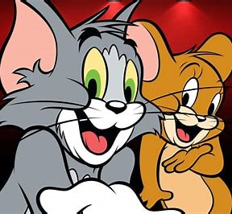
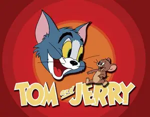

Kantara (transl. Mysterious forest, also known as Kantara: A Legend) is a 2022 Indian Kannada-language action thriller film[19][20] written and directed by Rishab Shetty, and produced by Vijay Kiragandur and Chaluve Gowda under Hombale Films. The film stars Rishab Shetty in a dual roles as Kaadubettu Shiva and Annappa, along with Sapthami Gowda, Kishore, and Achyuth Kumar. Blending elements of coastal Karnataka folklore, spirit possession rituals, and divine belief systems, the story centres around Bhuta Kola, a traditional form of worship practiced in the region. It follows a Kambala champion who clashes with an upright forest officer, leading to a larger conflict involving sacred land, ancestral legacy, and the balance between nature and man-made law.
.webp)
Lokah Chapter 1: Chandra is a 2025 Indian Malayalam-language superhero film written and directed by Dominic Arun and produced by Dulquer Salmaan under his banner Wayfarer Films. It stars Kalyani Priyadarshan in the title role along with Naslen, Sandy, Chandu Salim Kumar and Arun Kurian in the supporting role. The story revolves around Chandra, a mysterious woman who arrives in Bengaluru who was summoned by Moothon to fight the evil. Her life changes after she meets a young man named Sunny and his friends and gets entangled with corrupt inspector Nachiyappa and the gang associated with him. Actress Santhy Balachandran is credited for additional screenplay. Pre-production began on 12 September 2024, with principal photography commencing under the working title Production No: 7, and was completed by 30 January 2025, lasting 94 days. The title Lokah Chapter 1: Chandra was unveiled on 8 June 2025. Nimish Ravi, Chaman Chakko, and Jakes Bejoy formed the technical crew as the cinematographer, editor and music director respectively.

Tom and Jerry (also known as Tom & Jerry) is an American animated media franchise and series of comedy short films created in 1940 by William Hanna and Joseph Barbera. Best known for its 161 theatrical short films produced by Metro-Goldwyn-Mayer, the series centers on the rivalry between a cat named Tom and a mouse named Jerry. Many shorts also feature several recurring characters. Created in 1940 as the MGM cartoon studio struggled to compete with Walt Disney Productions and Leon Schlesinger Productions,[1] Tom and Jerry's initial short-film titled Puss Gets the Boot proved successful in theaters and garnered an Academy Award nomination for Best Short Subject (Cartoon). Hanna and Barbera later directed a total of 114 Tom and Jerry shorts for its initial MGM run from 1940 to 1958.[2] During this time, they won seven Academy Awards for Best Animated Short Film, tying for first place with Walt Disney's Silly Symphonies with the most awards in the category. After the MGM cartoon studio closed in 1957, MGM revived the series with Gene Deitch directing an additional thirteen Tom and Jerry shorts for Rembrandt Films in Czechoslovakia, from 1961 to 1962. Tom and Jerry became the highest-grossing animated short-film series of that time, overtaking Looney Tunes. Chuck Jones produced another 34 shorts with Sib Tower 12 Productions between 1963 and 1967. Five more shorts have been produced since 2001, making a total of 166 shorts.

The Angry Birds Movie is a 2016 animated comedy film based on the Angry Birds video game series. The film was directed by Clay Kaytis and Fergal Reilly, and written by Jon Vitti. It features the voices of Jason Sudeikis, Josh Gad, Danny McBride, Maya Rudolph, Kate McKinnon, Sean Penn, Tony Hale, Keegan-Michael Key, Bill Hader, and Peter Dinklage. The film follows Red, an outcast on an island of anthropomorphic flightless birds, as he suspects a newly arrived crew of pigs, led by Leonard, of plotting an evil plan, and attempts to put a stop to them with the help of his newfound friends Chuck and Bomb. After the success of the Angry Birds Toons animated series, Rovio Entertainment, the developer of the original video game, began work on a film adaptation. The project was announced in December 2012. The first image from the film was revealed in October 2014, with Sudeikis, Gad, McBride, Hader, Rudolph, and Dinklage revealed to be part of its cast at the same time. Rovio and Sony Pictures announced they would spend roughly €100 million on the marketing and distribution of The Angry Birds Movie, becoming the most expensive Finnish-produced film up to that point. Sony Pictures Imageworks was responsible for handling animation services for the film.